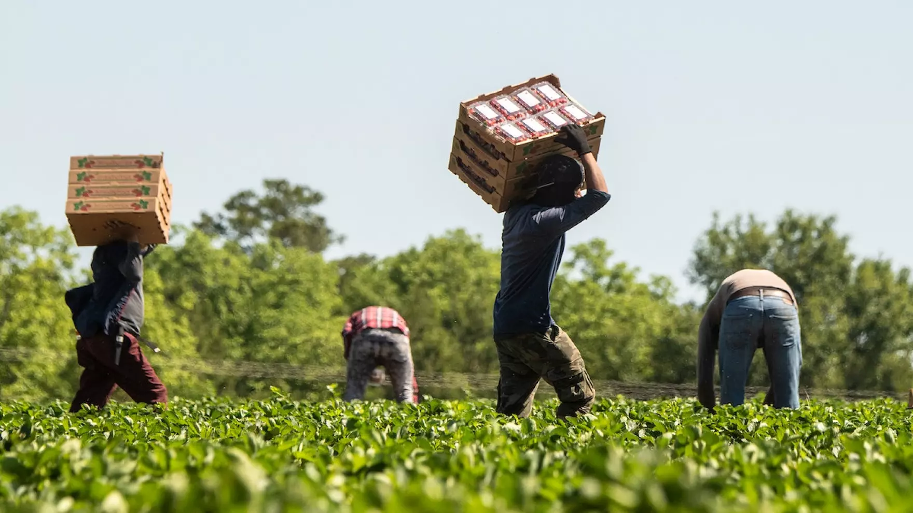
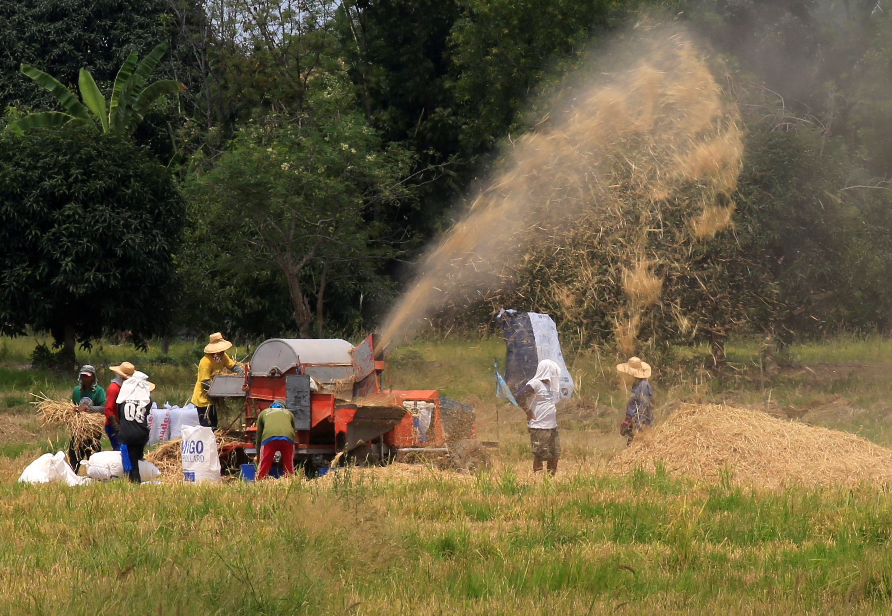

Overview
In understanding that the Agriculture , Forestry, and Fisheries or AFF sector is part of a bigger agri-food system, transformative ideas will be guiding the Plan, which shall encompass (a) addressing the systemic ills of AFF through a whole-of-value-chain approach in considering AFF production as tightly linked to processing, marketing, consumption, and waste management; (b) restoration of the local food culture towards improving agri-food system resiliency, empowering local farmers, and linking AFF production to consumer nutrition and health of the environment; and (c) opening up more opportunities in the blue economy to leverage and optimize the country's vast coastal and marine resources and maritime domain.
This IEC Material states the challenges faced by agriculture and agribusiness, and results to be targeted to overcome such challenges. These are: (a) efficiency of agriculture, forestry, and fisheries production enhanced; (b) access to markets and agriculture-, forestry-, and fisheries-based enterprises expanded; (c) resilience of agriculture, forestry, and fisheries value chains improved; and (d) agricultural institutions strengthened.
What is Modernize Agriculture and Agribusiness?
Modernizing agriculture and agribusiness refers to the process of adopting modern technologies, innovative practices, and sustainable methods that can enhance productivity, efficiency, and profitability in the agricultural sector. This includes the integration of precision farming techniques such as the use of drones, GPS mapping, and sensors for optimizing crop yields and resource management. The application of automated machinery, advanced irrigation systems, and data analytics would also be implemented to streamline processes and reduce labor-intensive tasks. Modern agribusiness extends far beyond traditional farming and includes every stage of the value chain: from production to processing, through marketing and distribution, with sustainability as the priority to meet rising food demands and avoid further environmental impact. The future of modern agriculture and agribusiness would depend on how to make it a more scientific enterprise that addresses climate change, food security, and resource depletion for a resilient and sustainable future.
Why modernize agriculture and agribusiness is important?
By increasing worker productivity, agricultural surplus to build capital, and foreign exchange through exports, agricultural modernization sets the stage for industrialization. By increasing the productivity and incomes of underprivileged farmers, bringing down the cost of food, and enhancing nutrition, modernization also contributes to the accomplishment of humanitarian objectives. Modernizing agriculture can, in fact, enhance human capital by better feeding the populace and preventing severe, crippling effects of malnutrition, such stunting in children. In general, a youngster who obtains adequate nutrition grows up to be healthier, more productive, and paid more than a child who does not. Excess labor shifts from rural farm jobs to urban manufacturing jobs as agriculture becomes more productive. The process of agricultural modernization is essential for economic transformation, attaining food security, and improving nutrition, even though the end outcome of this stage is a lower proportion of agriculture to GDP and the labor force.
In what ways does agriculture and agribusiness can be modernize?
-
Developing an efficient logistics system for both agricultural inputs and production outputs is a vital step toward modernizing agriculture. A well-designed logistics network ensures the seamless movement of goods, reduces costs, and eliminates barriers that disrupt the supply chain. This includes establishing resilient transport infrastructure such as farm-to-market roads, tramlines, and seaports, which facilitate the timely delivery of inputs like seeds, fertilizers, and machinery while enabling farmers to quickly and efficiently bring their products to markets. By enhancing connectivity and reducing transit delays, such systems not only lower transportation costs but also minimize post-harvest losses and improve access to local and global markets. Investing in robust logistics solutions is essential for creating a more competitive and sustainable agricultural sector that benefits farmers, consumers, and the economy as a whole.
-
Modernizing the agri-fishery sector necessitates a shift towards science-based and information-driven decision-making through digitalization. This approach aims to empower stakeholders by providing access to advanced tools, cutting-edge technologies, and real-time data. By harnessing these resources, farmers and fishermen can make smarter, more informed decisions that optimize productivity, enhance resource management, and improve overall efficiency. Digitalization enables the adoption of precision techniques, such as monitoring environmental conditions, predicting market trends, and implementing sustainable practices, ultimately fostering resilience and competitiveness in the sector. This transformation not only benefits individual producers but also contributes to the long-term sustainability and growth of the agri-fishery industry.
-
One effective way to help modernize agriculture is by addressing the need to expand market access. By opening both local and international markets, new opportunities can be created for Filipino farmers, allowing them to reach a broader customer base and increase their sales potential. This expanded market access will not only enhance the competitiveness of local agricultural products but also help farmers overcome barriers such as limited distribution channels and price fluctuations. Furthermore it provides a platform to promote Filipino products more effectively, raising their visibility on the global stage and encouraging the adoption of innovative marketing strategies. Ultimately, expanding market access can play a crucial role in boosting the agricultural sector’s growth, improving the livelihoods of farmers, and ensuring the long-term sustainability of the industry.
In conclusion, modernizing agriculture and agribusiness is not just a necessity; it’s an exciting opportunity to transform the future of farming and food production. By embracing innovation, sustainability, and global market access, we can unlock new possibilities for farmers and entrepreneurs, leading to greater productivity, economic growth, and environmental stewardship. The changes we make today will shape the future of agriculture, creating a resilient and dynamic industry that can meet the challenges of tomorrow. Let’s harness the power of technology, creativity, and collaboration to modernize agriculture and agribusiness, ensuring that it thrives for generations to come. The future of farming is bright—let’s be part of it.
Resources
We provide a collection of resources for further learning and support. You can download PDFs, read research papers, and explore external links to organizations advocating for indigenous rights.
- Modern Agriculture - Minnesota Soybean. (2019, March 25). Minnesota Soybean.
- agriculture key economic transformation food security and nutrition.
- Department of Agriculture. (2024, September 18). DA chief outlines strategies to modernize PH agriculture, boost food security. Official Portal of the Department of Agriculture. .
Discussion Boards
Join our community discussions and share your thoughts, experiences, and questions about the topics covered on our website. Your contributions enrich the conversation and foster a deeper understanding of the issues.